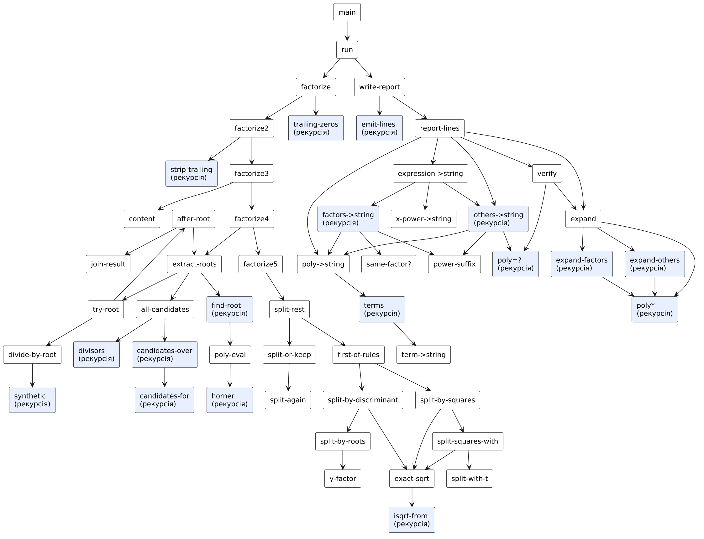

Символьні обчислення мовами функціонального програмування. Операції з многочленами.
Варіант 3
Київ — 2026
Мета роботи
Мета подана за методичними вказівками до лабораторних занять з дисципліни «Функціональне програмування» (Київ, 2025).
Умова завдання
Варіант 3. Умова наведена з методичних вказівок.
Задача 8.1
Варіант 3. Розробити процедури для розкладання многочлена на множники відповідно до правил алгебри. Многочлен заданий списком своїх коефіцієнтів та степенем від однієї змінної у вигляді:
Вивести на екран вирази, що є результатом розкладання многочлена. Окремою процедурою перевірити правильність розкладання многочлена на множники, здійснивши множення отриманих множників.
Аналіз задачі та математичне забезпечення
Задача 8.1: Розкладання многочлена на множники
Подання многочлена
Многочлен P(x) = a0xn + … + an з цілими коефіцієнтами подається списком (a0 a1 … an) від старшого коефіцієнта до вільного члена; степінь n вводиться окремо й перевіряється (довжина списку = n + 1, a0 ≠ 0).
Правила алгебри, що використано
- Винесення спільного множника. g = НОД усіх коефіцієнтів (зі знаком старшого), P = g·P0, де P0 — примітивний многочлен (НОД коефіцієнтів = 1) із додатним старшим коефіцієнтом.
- Винесення степеня x. Якщо k молодших коефіцієнтів нульові, P = xk·P′.
- Теорема про раціональні корені. Якщо p/q (нескоротний) — корінь многочлена з цілими коефіцієнтами, то p ділить вільний член an, а q ділить старший коефіцієнт a0. Кандидати ±p/q перебираються (
all-candidates), корені перевіряються схемою Горнера (poly-eval). - Ділення на (x − r) за схемою Горнера (
divide-by-root,synthetic). Корінь r = p/q дає лінійний множник (qx − p) = q·(x − r). За лемою Гаусса частка від ділення примітивного многочлена на примітивний множник (qx − p) має цілі коефіцієнти, томуtry-rootділить частку на q — і працює далі з цілими числами. Процес повторюється, поки знаходяться корені — так враховується кратність. - Залишок без раціональних коренів. Для многочленів виду ax⁴ + bx² + c застосовано два правила: (а) дискримінант b² − 4ac — повний квадрат ⇒ ax⁴ + bx² + c = a(x² − y₁)(x² − y₂); (б) різниця квадратів: якщо a = r², c = s², t² = 2rs − b, то ax⁴ + bx² + c = (rx² − tx + s)(rx² + tx + s) (наприклад, тотожність Софі Жермен x⁴ + 4 = (x² − 2x + 2)(x² + 2x + 2)). Інші залишки виводяться як нерозкладні над ℚ.
Перевірка розкладання
Окрема процедура verify перемножує всі множники (g, xk, лінійні, нелінійні) — expand, poly* — і порівнює коефіцієнти з вихідним многочленом (poly=?); при збігу виводиться «розкладання ПРАВИЛЬНЕ».
Запис результатів
Результат виводиться на екран і дублюється у файл factorization.txt через спільну процедуру emit-lines.
Приклади
| Многочлен | Розкладання | Застосоване правило |
|---|---|---|
| 2x³ − 3x² − 3x + 2 | (x + 1)(x − 2)(2x − 1) | раціональні корені −1, 2, 1/2 |
| x⁴ − 1 | (x − 1)(x + 1)(x² + 1) | корені ±1, залишок x² + 1 |
| x³ − 6x² + 12x − 8 | (x − 2)³ | кратність 3 |
| x³ − x | x(x − 1)(x + 1) | винесення x |
| 6x² − 6 | 6(x − 1)(x + 1) | числовий множник |
| x⁴ + 4 | (x² − 2x + 2)(x² + 2x + 2) | різниця квадратів |
| −2x⁵ + 8x³ − 8x | −2x(x² − 2)² | x, дискримінант, кратність 2 |
| 4x⁴ − 13x² + 9 | (x − 1)(x + 1)(2x − 3)(2x + 3) | раціональні корені ±1, ±3/2 |
Межі застосування
Над полем ℚ многочлен розкладається повністю лише з урахуванням усіх нерозкладних множників; програма гарантує повний розклад для многочленів степеня ≤ 3 і виду ax⁴ + bx² + c; для довільних многочленів вищих степенів без раціональних коренів залишок може бути розкладним на квадратичні множники (потрібен алгоритм Кронекера чи Ценхауза) — такий залишок виводиться як окремий множник.
HIPO-діаграма (схема виклику процедур)
Діаграма показує ієрархію викликів процедур (стрілка A → B означає, що A викликає B); блоки з рекурсією виділено. Допоміжні процедури введення даних (ask-…) для наочності опущено.
Задача 8.1: Розкладання многочлена на множники

| Процедура | Вхід (Input) | Обробка / вихід (Process → Output) |
|---|---|---|
main | n, коефіцієнти | виклик run |
factorize | coeffs | (g, k, лінійні множники, нелінійні множники) |
extract-roots / try-root / find-root | coeffs | лінійні множники та залишок |
all-candidates / divisors | coeffs | кандидати у раціональні корені ±p/q |
poly-eval / divide-by-root | coeffs, r | значення P(r), частка від ділення на (x − r) |
split-rest | залишок | розкладання виду ax⁴ + bx² + c |
expand / verify | r, original | перемноження множників і перевірка |
report-lines / emit-lines | coeffs, r | виведення на екран і запис у файл |
Код
Код наведено текстом (не скріншотом). Файли можна завантажити та запустити в Dr.Racket або Guile.
#lang racket), далі (main). Причина: потрібні file-exists?, delete-file. Перевірено в Racket 9.3 і Guile 3.0 — результати однакові.Задача 8.1: Розкладання многочлена на множники
⬇ task_factor.scm;; =====================================================================
;; ЛР8, варіант 3. Розкладання многочлена на множники
;; P(x) = a0*x^n + a1*x^(n-1) + ... + a(n-1)*x + an
;; Многочлен з цілими коефіцієнтами задано списком (a0 a1 ... an). Процедури:
;; 1) виносимо за дужки спільний числовий множник (НОД коефіцієнтів) і степінь x^k
;; (якщо молодші коефіцієнти нульові);
;; 2) за теоремою про раціональні корені шукаємо корені p/q (p | an, q | a0);
;; знайдений корінь дає лінійний множник (q*x - p), на який многочлен ділиться
;; (схема Горнера) — повторюємо, щоб урахувати кратність;
;; 3) залишок без раціональних коренів виводиться як нерозкладний множник;
;; 4) окрема процедура перевіряє розкладання: перемножує множники та порівнює з P(x).
;; Результати виводяться на екран і записуються у файл factorization.txt.
;; Без бібліотек для поліномів і без let / set! / циклів.
;; Мова: «The Racket Language» у Dr.Racket (або Guile): використовуються file-exists? та delete-file.
;; =====================================================================
;; ---------- Арифметика цілих ----------
(define (iabs x) (if (< x 0) (- x) x))
(define (gcd2 a b) (if (= b 0) (iabs a) (gcd2 b (remainder a b))))
(define (gcd-list lst)
(if (null? lst) 0 (gcd2 (car lst) (gcd-list (cdr lst)))))
;; Дільники натурального m: 1..m
(define (divisors m d)
(cond ((> d m) '())
((= (remainder m d) 0) (cons d (divisors m (+ d 1))))
(else (divisors m (+ d 1)))))
;; ---------- Базові операції над списками ----------
(define (my-append a b) (if (null? a) b (cons (car a) (my-append (cdr a) b))))
(define (my-length lst) (if (null? lst) 0 (+ 1 (my-length (cdr lst)))))
(define (last-of lst) (if (null? (cdr lst)) (car lst) (last-of (cdr lst))))
(define (all-but-last lst) (if (null? (cdr lst)) '() (cons (car lst) (all-but-last (cdr lst)))))
(define (zeros k) (if (= k 0) '() (cons 0 (zeros (- k 1)))))
(define (scale-list lst c) (if (null? lst) '() (cons (* c (car lst)) (scale-list (cdr lst) c))))
(define (divide-list lst c) (if (null? lst) '() (cons (/ (car lst) c) (divide-list (cdr lst) c))))
(define (member-num? x lst)
(cond ((null? lst) #f) ((= x (car lst)) #t) (else (member-num? x (cdr lst)))))
;; ---------- Многочлен: обчислення значення (схема Горнера) ----------
(define (poly-eval coeffs x) (horner (cdr coeffs) x (car coeffs)))
(define (horner rest x acc)
(if (null? rest) acc (horner (cdr rest) x (+ (* acc x) (car rest)))))
;; ---------- Ділення на (x - r) за схемою Горнера ----------
;; Повертає частку (список коефіцієнтів); остача перевіряється окремо через poly-eval
(define (divide-by-root coeffs r) (synthetic (cdr coeffs) r (car coeffs) (list (car coeffs))))
(define (synthetic rest r prev acc)
(if (null? (cdr rest))
(reverse-list acc)
(synthetic (cdr rest) r (+ (car rest) (* r prev)) (cons (+ (car rest) (* r prev)) acc))))
(define (reverse-list lst) (rev lst '()))
(define (rev lst acc) (if (null? lst) acc (rev (cdr lst) (cons (car lst) acc))))
;; ---------- Множення многочленів ----------
;; Добуток (c0 ... cm)*(d0 ... dk): складаємо зсунуті копії
(define (poly* p q)
(if (null? (cdr p))
(scale-list q (car p))
(poly+ (my-append (scale-list q (car p)) (zeros (- (my-length p) 1)))
(poly* (cdr p) q))))
;; Додавання многочленів різної довжини (вирівнювання за молодшими коефіцієнтами)
(define (poly+ a b)
(cond ((> (my-length a) (my-length b)) (poly+ a (my-append (zeros (- (my-length a) (my-length b))) b)))
((< (my-length a) (my-length b)) (poly+ (my-append (zeros (- (my-length b) (my-length a))) a) b))
(else (add-same a b))))
(define (add-same a b) (if (null? a) '() (cons (+ (car a) (car b)) (add-same (cdr a) (cdr b)))))
;; ---------- Кроки розкладання ----------
;; Кількість молодших нульових коефіцієнтів (степінь x, що виноситься)
(define (trailing-zeros coeffs)
(if (= (last-of coeffs) 0) (+ 1 (trailing-zeros (all-but-last coeffs))) 0))
(define (strip-trailing coeffs k)
(if (= k 0) coeffs (strip-trailing (all-but-last coeffs) (- k 1))))
;; Кандидати у корені: ±p/q, p | |an|, q | a0, gcd(p, q) = 1
(define (candidates-for ps q)
(if (null? ps)
'()
(my-append (if (= (gcd2 (car ps) q) 1) (list (/ (car ps) q) (- (/ (car ps) q))) '())
(candidates-for (cdr ps) q))))
(define (all-candidates coeffs)
(candidates-over (divisors (iabs (last-of coeffs)) 1) (divisors (iabs (car coeffs)) 1)))
(define (candidates-over ps qs)
(if (null? qs) '() (my-append (candidates-for ps (car qs)) (candidates-over ps (cdr qs)))))
;; Перший кандидат, що є коренем, або #f
(define (find-root coeffs cands)
(cond ((null? cands) #f)
((= (poly-eval coeffs (car cands)) 0) (car cands))
(else (find-root coeffs (cdr cands)))))
;; Корінь r = p/q → лінійний множник (q x - p), подається парою (q . p)
(define (numerator-of r) (numerator r))
(define (denominator-of r) (denominator r))
;; Витягування всіх раціональних коренів із кратністю.
;; Повертає (список лінійних множників (q . p), залишок-многочлен)
(define (extract-roots coeffs)
(if (< (my-length coeffs) 2)
(list '() coeffs)
(try-root coeffs (find-root coeffs (all-candidates coeffs)))))
(define (try-root coeffs r)
(if r
(after-root (cons (denominator-of r) (numerator-of r))
(divide-list (divide-by-root coeffs r) (denominator-of r)))
(list '() coeffs)))
(define (after-root factor quotient)
(join-result factor (extract-roots quotient)))
(define (join-result factor rest)
(list (cons factor (car rest)) (cadr rest)))
;; ---------- Розкладання залишку (степінь 4, парний многочлен a x^4 + b x^2 + c) ----------
;; Цілий квадратний корінь (або #f, якщо n — не повний квадрат)
(define (isqrt-from n k)
(cond ((> (* k k) n) #f)
((= (* k k) n) k)
(else (isqrt-from n (+ k 1)))))
(define (exact-sqrt n) (if (< n 0) #f (isqrt-from n 0)))
;; Квадратний тричлен у змінній y = x^2: корінь y = p/q дає множник (q x^2 - p)
(define (y-factor y) (list (denominator y) 0 (- (numerator y))))
;; Правило 1: дискримінант b^2 - 4ac — повний квадрат → a(x^2 - y1)(x^2 - y2)
(define (split-by-discriminant a b c)
(split-by-roots a b (exact-sqrt (- (* b b) (* 4 a c)))))
(define (split-by-roots a b d)
(if d
(list (y-factor (/ (+ (- b) d) (* 2 a))) (y-factor (/ (- (- b) d) (* 2 a))))
#f))
;; Правило 2 (різниця квадратів): a = r^2, c = s^2:
;; a x^4 + b x^2 + c = (r x^2 + s)^2 - (2rs - b) x^2 = (r x^2 - t x + s)(r x^2 + t x + s), t^2 = 2rs - b
(define (split-by-squares a b c)
(split-squares-with (exact-sqrt a) (exact-sqrt c) b))
(define (split-squares-with r s b)
(if (and r s) (split-with-t r s (exact-sqrt (- (* 2 r s) b))) #f))
(define (split-with-t r s t)
(if (and t (> t 0)) (list (list r (- t) s) (list r t s)) #f))
(define (first-of-rules a b c)
(or (split-by-discriminant a b c) (split-by-squares a b c)))
;; Нерозкладні множники залишку: список многочленів (коефіцієнти)
(define (split-rest r)
(cond ((< (my-length r) 2) '())
((and (= (my-length r) 5) (= (cadr r) 0) (= (cadddr r) 0))
(split-or-keep r (first-of-rules (car r) (caddr r) (last-of r))))
(else (list r))))
(define (split-or-keep r parts)
(if parts (split-again parts) (list r)))
;; Знайдені квадратні множники самі можуть бути розкладені правилом (за потреби) — тут вони вже нерозкладні
(define (split-again parts) parts)
;; ---------- Знак і числова стала ----------
;; P = g * P0, де P0 — примітивний многочлен із додатним старшим коефіцієнтом
(define (content coeffs)
(if (< (car coeffs) 0) (- (gcd-list coeffs)) (gcd-list coeffs)))
;; ---------- Повне розкладання ----------
;; Результат: (g k множники залишок), де P = g * x^k * Π(q x - p) * залишок
(define (factorize coeffs)
(factorize2 coeffs (trailing-zeros coeffs)))
(define (factorize2 coeffs k)
(factorize3 (strip-trailing coeffs k) k))
(define (factorize3 core k)
(factorize4 (content core) k (divide-list core (content core))))
(define (factorize4 g k primitive)
(factorize5 g k (extract-roots primitive)))
(define (factorize5 g k roots-and-rest)
(list g k (car roots-and-rest) (split-rest (cadr roots-and-rest))))
;; ---------- Подання у вигляді рядка ----------
(define (term->string c deg first?)
(string-append
(cond ((< c 0) (if first? "-" " - ")) (else (if first? "" " + ")))
(if (and (= (iabs c) 1) (> deg 0)) "" (number->string (iabs c)))
(cond ((= deg 0) "") ((= deg 1) "x") (else (string-append "x^" (number->string deg))))))
(define (terms cs deg first?)
(cond ((null? cs) "")
((= (car cs) 0) (terms (cdr cs) (- deg 1) first?))
(else (string-append (term->string (car cs) deg first?) (terms (cdr cs) (- deg 1) #f)))))
(define (poly->string coeffs)
(if (string=? (terms coeffs (- (my-length coeffs) 1) #t) "") "0" (terms coeffs (- (my-length coeffs) 1) #t)))
;; Множники з кратностями: підряд однакові лінійні множники об'єднуються
(define (same-factor? a b) (and (= (car a) (car b)) (= (cdr a) (cdr b))))
(define (count-same f lst) (cond ((null? lst) 0) ((same-factor? f (car lst)) (+ 1 (count-same f (cdr lst)))) (else 0)))
(define (drop-n lst n) (if (= n 0) lst (drop-n (cdr lst) (- n 1))))
(define (factors->string factors)
(if (null? factors)
""
(string-append "(" (poly->string (list (car (car factors)) (- (cdr (car factors))))) ")"
(power-suffix (count-same (car factors) factors))
(factors->string (drop-n factors (count-same (car factors) factors))))))
(define (power-suffix m) (if (= m 1) "" (string-append "^" (number->string m))))
(define (x-power->string k)
(cond ((= k 0) "") ((= k 1) "x") (else (string-append "x^" (number->string k)))))
;; Нелінійні множники: підряд однакові об'єднуються у степінь
(define (others->string polys)
(if (null? polys)
""
(string-append "(" (poly->string (car polys)) ")"
(power-suffix (count-same-poly (car polys) polys))
(others->string (drop-n polys (count-same-poly (car polys) polys))))))
(define (count-same-poly f lst)
(cond ((null? lst) 0) ((poly=? f (car lst)) (+ 1 (count-same-poly f (cdr lst)))) (else 0)))
(define (expression->string r)
(string-append
(if (= (car r) 1) "" (if (= (car r) -1) "-" (number->string (car r))))
(x-power->string (cadr r))
(factors->string (caddr r))
(others->string (cadddr r))))
;; ---------- Перевірка: перемноження множників ----------
(define (expand-factors factors)
(if (null? factors)
'(1)
(poly* (list (car (car factors)) (- (cdr (car factors)))) (expand-factors (cdr factors)))))
(define (expand-others polys)
(if (null? polys) '(1) (poly* (car polys) (expand-others (cdr polys)))))
(define (expand r)
(poly* (list (car r))
(poly* (cons 1 (zeros (cadr r)))
(poly* (expand-factors (caddr r)) (expand-others (cadddr r))))))
(define (poly=? a b)
(cond ((and (null? a) (null? b)) #t)
((or (null? a) (null? b)) #f)
(else (and (= (car a) (car b)) (poly=? (cdr a) (cdr b))))))
(define (verify r original)
(poly=? (expand r) original))
;; ---------- Виведення на екран і в файл ----------
(define (emit-lines lines port)
(if (null? lines)
(cond (#f #f)) ; нічого не повертаємо (у Racket не друкується «#t»)
(begin (display (car lines)) (newline) (display (car lines) port) (newline port)
(emit-lines (cdr lines) port))))
(define (report-lines coeffs r)
(list (string-append "Многочлен: P(x) = " (poly->string coeffs))
(string-append "Розкладання: P(x) = " (expression->string r))
(string-append "Лінійних множників (з кратністю): " (number->string (my-length (caddr r))))
(string-append "Нерозкладні множники степеня >= 2: " (number->string (my-length (cadddr r)))
(if (null? (cadddr r)) "" (string-append " → " (others->string (cadddr r)))))
(string-append "Перевірка (добуток множників): " (poly->string (expand r)))
(string-append "Розкладання " (if (verify r coeffs) "ПРАВИЛЬНЕ" "НЕПРАВИЛЬНЕ")
" — добуток множників " (if (verify r coeffs) "збігається" "не збігається")
" з вихідним многочленом")))
;; ---------- Інтерфейс ----------
(define (main)
(display "Степінь многочлена n: ") (ask-coeffs (read)))
(define (ask-coeffs n)
(display "Коефіцієнти (a0 a1 ... an) у вигляді списку: ") (run n (read)))
(define (run n coeffs)
(newline)
(if (or (not (= (my-length coeffs) (+ n 1))) (= (car coeffs) 0))
(begin (display "Помилка: має бути n+1 коефіцієнтів, a0 ≠ 0") (newline))
(write-report coeffs (factorize coeffs))))
;; Якщо файл уже існує, його спершу видаляємо: у Racket call-with-output-file не перезаписує існуючий файл.
(define (write-report coeffs r)
(cond ((file-exists? "factorization.txt") (delete-file "factorization.txt")))
(call-with-output-file "factorization.txt"
(lambda (port) (emit-lines (report-lines coeffs r) port))))
Скріншот роботи та результату
Знімки консолі відтворюють роботу програм: запуск виконано в інтерпретаторі Guile 3.0 (R5RS-сумісний); введені користувачем значення виділено зеленим. Для кожного запуску наведено умови та результат.
Задача 8.1: Розкладання многочлена на множники


Оцінка достовірності результату
Розкладання: добуток множників = P(x) (sympy) та множники збігаються з sympy.factor_list
| Вхідні дані | Результат програми | Еталон | |
|---|---|---|---|
| P = (2 -3 -3 2) | (x + 1)(x - 2)(2x - 1) | 1·(x - 2)·(x + 1)·(2*x - 1) | ✓ |
| P = (1 0 0 0 -1) | (x - 1)(x + 1)(x^2 + 1) | 1·(x - 1)·(x + 1)·(x**2 + 1) | ✓ |
| P = (1 -6 12 -8) | (x - 2)^3 | 1·(x - 2)^3 | ✓ |
| P = (1 0 -1 0) | x(x - 1)(x + 1) | 1·(x - 1)·(x)·(x + 1) | ✓ |
| P = (1 0 0 0 4) | (x^2 - 2x + 2)(x^2 + 2x + 2) | 1·(x**2 - 2*x + 2)·(x**2 + 2*x + 2) | ✓ |
| P = (6 0 -6) | 6(x - 1)(x + 1) | 6·(x - 1)·(x + 1) | ✓ |
| P = (-2 0 8 0 -8 0) | -2x(x^2 - 2)^2 | -2·(x)·(x**2 - 2)^2 | ✓ |
| P = (1 0 -5 0 4) | (x - 1)(x + 1)(x - 2)(x + 2) | 1·(x - 2)·(x - 1)·(x + 1)·(x + 2) | ✓ |
| P = (4 0 -13 0 9) | (x - 1)(x + 1)(2x - 3)(2x + 3) | 1·(x - 1)·(x + 1)·(2*x - 3)·(2*x + 3) | ✓ |
| P = (1 0 1 0 1) | (x^2 - x + 1)(x^2 + x + 1) | 1·(x**2 - x + 1)·(x**2 + x + 1) | ✓ |
| P = (1 1 1) | (x^2 + x + 1) | 1·(x**2 + x + 1) | ✓ |
| P = (1 -3 3 -1 0 0 0) | x^3(x - 1)^3 | 1·(x - 1)^3·(x)^3 | ✓ |
| P = (12 -8 -3 2) | (2x - 1)(2x + 1)(3x - 2) | 1·(2*x - 1)·(2*x + 1)·(3*x - 2) | ✓ |
| P = (3 -3) | 3(x - 1) | 3·(x - 1) | ✓ |
| P = (5) | 5 | 5· | ✓ |
| P = (2 7 3) | (x + 3)(2x + 1) | 1·(x + 3)·(2*x + 1) | ✓ |
| P = (1 2 1) | (x + 1)^2 | 1·(x + 1)^2 | ✓ |
| P = (1 -1 -1 1) | (x - 1)^2(x + 1) | 1·(x + 1)·(x - 1)^2 | ✓ |
| P = (10 -19 -2 15 -4) | (x - 1)(10x^3 - 9x^2 - 11x + 4) | 1·(x - 1)·(10*x**3 - 9*x**2 - 11*x + 4) | ✓ |
19 / 19 збігів.
Аналіз коду на відповідність критеріям простоти та Clean code
Код проаналізовано за критеріями чистого коду та за вимогами завдання: прочитано кожну програму, автоматично пораховано метрики й виконано пошук заборонених конструкцій. Нижче — критерії, вимірювання та висновки; випадки, де за результатами аналізу код було змінено, позначені «знайдено й виправлено».
Критерії
| Критерій | Що перевірялось |
|---|---|
| Іменування | імена відображають зміст (дієслова для дій, іменники для даних) |
| Малі функції | одна процедура — одна відповідальність; довжина процедур |
| Відсутність побічних ефектів | немає set!, змінних стану; значення передаються параметрами |
| Відповідність обмеженням | заборонені конструкції (let, let*, letrec, do, while, for, loop) |
| Простота | немає дублювання обчислень, зайвих абстракцій; коментарі пояснюють «чому», а не «що» |
| Коректність і тестованість | чисті процедури можна перевірити окремо (див. розділ «Оцінка достовірності») |
Задача 8.1: Розкладання многочлена на множники
| Рядків | Рядків коду | Рядків коментарів | Процедур | Середня довжина | Максимальна довжина |
|---|---|---|---|---|---|
| 280 | 190 | 50 | 74 | 2.6 | 10 |
| let | let* | letrec | set! | do | while/for/loop |
|---|---|---|---|---|---|
| 0 | 0 | 0 | 0 | 0 | 0 |
Висновки перевірки
- Розклад на етапи (
trailing-zeros→content→extract-roots→split-rest) відбиває математичний алгоритм; кожна процедура коротка й має одну відповідальність; результатfactorize— єдине структуроване значення. - Заборонені бібліотеки поліномів не використовуються; усі операції (
poly*,poly+,poly-eval, ділення Горнера) — власні. - Знайдено й виправлено: перша версія залишала x⁴ + 4 і (x² − 2)² нерозкладеними; після аналізу додано правила для біквадратних многочленів (
split-by-discriminant,split-by-squares). - Зауваження (читабельність): ланцюжок
factorize…factorize5з’явився через заборону let: кожен проміжний результат — окрема процедура. У Racket/Scheme із let* код був би компактнішим; у цій лабораторній правило дотримано послідовно. - Зауваження: ефективність перебору кандидатів ±p/q — O(d(an)·d(a0)·n) (d — кількість дільників); для коефіцієнтів до 106 це прийнятно, для більших потрібне факторизування чисел (
divisorsреалізовано лінійним перебором).
Примітка: метрики розраховано автоматично скриптом (кількість рядків, процедур, довжина процедур, пошук заборонених конструкцій).
Висновок
Розроблено систему розкладання многочленів з цілими коефіцієнтами на множники: винесення числового множника та степеня x, пошук раціональних коренів за теоремою про раціональні корені зі схемою Горнера та урахуванням кратності, розкладання біквадратних многочленів, а також окрему процедуру перевірки множенням. Результати виводяться на екран та записуються у файл. Усі 19 тестових многочленів (у т. ч. з кратними коренями, x⁴ + 4, виносом x) перевірено незалежно за допомогою sympy: добуток множників збігається з вихідним многочленом, а набір множників збігається з sympy.factor_list.